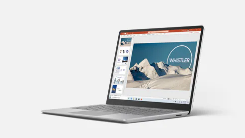
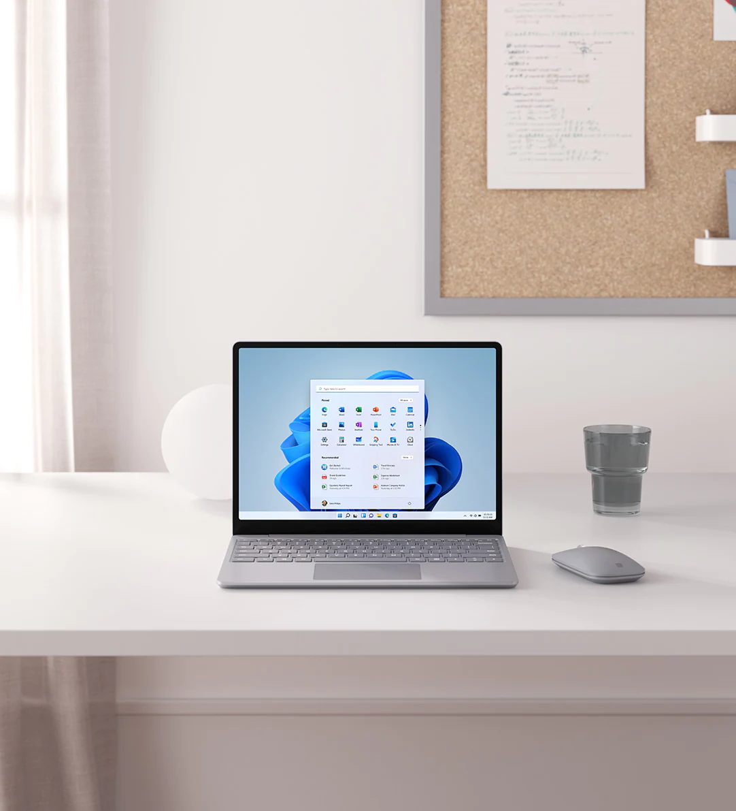

Windows 11으로 무료 업그레이드
Surface Laptop Go
어디서나 활용 가능한 노트북
Surface Laptop Go
-
“Surface Laptop Go는 재미 있고 작지만 사랑스러운 노트북이라는 표현이 딱입니다.”
- Windows Central | October 13, 2020

Surface 역사상 최경량 제품
외관이 멋지고 성능도 우수하며 배터리로도 하루 종일 사용 가능1할 뿐 아니라 가성비도 매우 뛰어납니다.

배터리로도 최장 13시간까지 작동 가능하므로 하루 종일 전원을 연결하지 않고도 사용 가능
최소 무게가 1,110g이고 두께는 15.69mm에 불과하므로 간편한 휴대 가능
10세대 Intel® Core™ i5 프로세서가 장착되어 있어 원하는 앱 실행 가능
HD 카메라가 기본 제공되므로 최고의 화상 통화 화질 제공
고급스러운 Surface 디자인과 최고의 가성비
초경량이라 휴대가 간편하고, 매일 사용하는 앱*,2을 원활하게 실행할 수 있으며, 고급스러운 소재가 사용되어 어디서나 돋보이는 노트북입니다.
세련된 디자인과 최고의 가성비
더욱 넓게 활용 가능한 12.4인치 PixelSense™ 터치 스크린이 채택되었으며 고급스러운 소재가 사용된 Surface 사상 최경량 노트북입니다.
친숙한 기능과 신뢰할 수 있는 Windows Hello 보안
지문 전원 단추(일부 모델)를 사용해 원터치 방식으로 로그인할 수 있으며, 풀 사이즈 키보드로 하루 종일 편안하게 입력을 할 수 있습니다. 또한 Dolby® Audio™를 통해 실감나는 Omnisonic 사운드를 즐길 수 있습니다.
즐겨 사용하는 앱으로 손쉽게 작업 완료
효율적으로 연결하여 공동 작업을 원활하게 처리할 수 있습니다. 하루 종일 사용 가능한 배터리1, 10세대 Intel® Core™, 최대 8GB RAM이 제공되므로 즐겨 사용하는 앱*,2을 원활하게 실행할 수 있습니다.
Surface Laptop Go를 사용해 보고 몇 가지 주요 기능을 확인해 보세요.
옆으로 밀어 회전하면서 360도로 Surface Laptop Go 살펴보기
고속 프로세서 하나로 누리는 세 가지 유용한 혜택
모든 항목을 온라인에서 저장하나요, 아니면 로컬에 유지하나요? 손가락 터치로 로그인하고 싶으세요? 파일과 사진을 위한 저장 공간이 더 많이 필요하세요? 10세대 Intel® Core™ i5 프로세서를 통해 구동되는 용도에 적합한 장치를 구입하세요.
클라우드 저장소에 최적화된 합리적인 가격대의 장치
- 10세대 Intel® Core™ i5 프로세서
- 4GB RAM, 64GB 저장소3
- 휴대폰처럼 클라우드에 사진과 파일 저장
- Microsoft 365 구독 구매 시 1TB OneDrive 클라우드 저장소 제공*
원터치 로그인, 더 많은 로컬 저장 공간
- 10세대 Intel® Core™ i5 프로세서
- 8GB RAM, 128GB 저장소3
- 여러 작업을 실행하기 위한 부스트와 더 많은 로컬 공간
- 지문 전원 단추와 원터치 로그인

지금 구입
업계 최대 용량의 로컬 저장 공간, 원터치 로그인
- 10세대 Intel® Core™ i5 프로세서
- 8GB RAM, 256GB 저장소3
- 앱을 비롯해 대용량 음악 및 비디오 파일 저장을 위한 업계 최대 로컬 공간
- 지문 전원 단추와 원터치 로그인
학습과 성장, 창작 그리고 휴식
Surface Laptop Go에서 선명한 고품질 프레젠테이션을 재생 및 코딩하여 제공하고, 밤새 영화를 보며 휴식을 취하고, 아이디어를 멋진 시각적 스토리로 바꿔 보세요.

하루 종일 지속되는 전원 공급
우수한 하드웨어 기능을 통해 Microsoft 365 등의 가장 많이 사용하는 앱*을 실행할 수 있습니다.
-
원터치 로그인(일부 모델 한정)을 사용하면 OneDrive 파일 등에 빠르고 안전하게 액세스 할 수 있습니다. 또한 Instant On을 활용하면 언제든지 중단한 부분부터 다시 시작할 수 있습니다.
-
배터리 사용 시간은 최장 13시간입니다.1 또한 고속 충전 기능을 통해 단 1시간 만에 80%까지 신속하게 충전할 수 있습니다.4
-
Windows 10 Home S 모드2에서 PowerPoint, Word, Microsoft Teams 등*을 활용하면 손쉽게 연결하고 작업을 처리할 수 있습니다.
-
온라인 교육 도구*, 내장 HD 웹캠, 스튜디오 마이크를 사용하면 학교 프레젠테이션을 재미있게 대화형으로 진행할 수 있습니다.
-
만나고, 경험을 공유하고, 중요한 순간을 축하하세요. Surface Laptop Go는 화상 통화 및 전화 회의에 적합하여 연결된 상태를 유지하는 데 도움이 됩니다.
-
Edge에서 마음 편히 쇼핑하고, 음악, 팟캐스트 및 오디오북을 듣고, 좋아하는 Netflix*,5 프로그램을 스트리밍하세요.

가장 적합한 노트북 선택
초경량 일상 작업용 노트북이나 멀티태스킹 성능이 우수한 대화면 노트북을 찾고 계신가요? 적합한 노트북을 쉽게 결정할 수 있도록 주요 기능을 자세히 확인해 보세요.
Surface Laptop Go
- 역대 최경량 Surface Laptop, 12.4인치 PixelSense™ 1536 x 1024(148PPI) 디스플레이, 대화형 터치 스크린
- 일상적인 생산성 작업/스트리밍을 중점적으로 수행하는 경우에 가장 적합함
- Instant On 및 지문 전원 단추를 사용해 암호 없이 원터치 방식으로 로그인(일부 모델)
Surface Laptop 3 13.5인치 및 15인치
- 대형 13.5인치 PixelSense™ 2256 x 1504(201PPI) 디스플레이 또는 15인치 PixelSense™ 2496 x 1664(201PPI) 디스플레이(각각 대화형 터치 스크린 포함/Surface 펜 지원)*
- 멀티태스킹 수행 시와 여러 앱 동시 실행 시 더욱 뛰어난 성능 제공
- Instant On 및 암호 없이 Windows Hello 얼굴 인식 로그인(모든 모델)
12.4인치 터치 스크린
- 문서 및 웹 사이트 탐색, 스크롤, 이동
- TV 프로그램 및 영화 스트리밍
할일 처리
- Microsoft 365* 앱 실행 및 지속적인 소셜 미디어 확인
- 멋진 교육 및 업무용 프레젠테이션 제작 및 전달
- 긴 배터리 사용 시간으로 작업, 쇼핑 또는 스트리밍을 하루 종일 지속 가능1
제품 역사상 최경량 Surface Laptop
- 최소 무게가 1,110g에 불과하므로 간편한 휴대 가능
- 크고 정밀한 트랙패드를 갖춘 풀 사이즈 키보드로 어디서든지 편안하게 입력

필수적인 연결 기능 및 보안
- Windows Hello 로그인을 비롯해 Windows Hello의 지문 전원 단추 및 원터치 로그인(일부 모델에서 지원)을 통한 편리한 보안
- 기본 제공되는 720p HD 카메라를 통해 최고의 화상 통화 화질 구현
- 기본 제공 USB-C®/USB-A 포트, Surface Connect 및 헤드폰 잭을 활용하여 자주 사용하는 액세서리 연결
기술 사양
|
사용자 시나리오 |
12.4인치 PixelSense™ 터치 스크린이 장착된 제품 역사상 최경량 Surface Laptop에서 할일을 처리하고, 검색하고, 원하는 동영상을 마음껏 감상하세요. 시그니처 3:2 비율로 공간을 최적화하여 더 많은 것을 보고 작업할 수 있습니다 |
|---|---|
|
크기 |
278.18 mm x 205.67 mm x 15.69 mm (10.95” x 8.10” x 0.62”) |
|
스토리지3 |
eMMC 드라이브: 64GB SSD: 128GB, 256GB |
|
디스플레이 |
화면: 12.4인치 PixelSense™ 디스플레이 해상도: 1536 x 1024(148PPI) 가로 세로 비율: 3:2 터치: 10포인트 멀티 터치 |
|
배터리 사용 시간1 |
최대 13시간 동안 일반적인 디바이스 사용 가능 |
|
메모리 |
4GB 또는 8GB LPDDR4x RAM |
|
그래픽 |
Intel® UHD Graphics |
|
프로세서 |
10세대 Intel® Core™ i5 프로세서 - 1035G1 |
|
연결 |
USB-C® 1개 USB-A 1개 3.5mm 헤드폰 잭 Surface Connect 포트 1개 |
|
보안 |
펌웨어 TPM Windows Hello 원터치 로그인을 통한 엔터프라이즈급 보호 지문 판독기 전원 단추로 원터치 로그인(Surface Laptop Go i5/4GB/64GB에는 지문 전원 단추가 포함되어 있지 않음) |
|
카메라, 비디오 및 오디오 |
720p HD f2.0 카메라(전면) 이중 원거리 스튜디오 마이크 Dolby® Audio™ 지원 Omnisonic 스피커 |
|
소프트웨어 |
Windows 10 Home S 모드2 Microsoft 365 Family 30일 평가판 |
|
무선 연결 |
Bluetooth® Wireless 5.0 기술 Wi-Fi 6: 802.11ax 호환 |
|
센서 |
주변 광원 센서 |
|
외관 |
윗면: 알루미늄 밑면: 유리 섬유 및 소비자 사용 후 재활용 성분 30%가 포함된 폴리카보네이트 복합 수지 시스템 색: 플래티넘 |
|
기본 제공 사항 |
Surface Laptop Go 39W 전원 공급 장치 빠른 시작 가이드 안전 및 보증 문서 |
|
보증4 |
1년 한정 하드웨어 보증 |
|
무게 |
1,110g(2.44파운드) |


- 기능과 앱의 사용 여부는 지역마다 다를 수 있습니다.
- * Microsoft 365 및 일부 소프트웨어와 액세서리는 별도로 판매됩니다.
- [1] 배터리 사용 시간
- Surface Laptop Go: 최장 13시간의 배터리 사용 시간은 일반적인 Surface 디바이스 사용을 기준으로 한 것입니다. 테스트는 Microsoft에서 2020년 9월에 제작 전 단계의 소프트웨어 및 제작 전 단계의 Surface Laptop Go 10세대 Intel® Core™ i5 프로세서, 128GB, 8GB RAM Microsoft Surface® Edition 디바이스를 사용하여 실시했습니다. 테스트 시에는 최신 대기 모드를 적용하고 디바이스를 적극적으로 사용하면서 배터리를 완전히 방전시켰습니다. 적극적인 사용에는 (1) 여러 개의 열려 있는 탭을 통해 8개의 인기 있는 웹 사이트에 액세스한 웹 검색 테스트, (2) Microsoft Word, PowerPoint, Excel 및 Outlook을 사용한 생산성 테스트 그리고 (3) 응용 프로그램이 유휴 상태일 때 디바이스를 사용한 시간이 포함됩니다. 자동 밝기를 사용하지 않은 상태에서 화면 밝기가 150 nits로 설정된 것을 제외하면 모든 설정이 기본 설정이었습니다. Wi-Fi는 네트워크와 연결했습니다. 배터리 사용 시간은 설정, 사용량 및 기타 요인에 따라 크게 달라집니다.
- [2] 소비자용 Surface Laptop Go은(는) Windows 10 Home S 모드가 제공되므로 가장 많이 사용하는 유용한 Windows 기능을 매우 저렴한 비용으로 계속 활용할 수 있습니다. Windows 10 Home S 모드는 Windows 내의 Microsoft Store 앱/프로그램 및 Windows 10 Home S 모드와 호환되는 액세서리와만 연동됩니다. S 모드에서 한 번 전환하면 다시 되돌릴 수 없습니다. 업무 현장에 엔터프라이즈 관리 및 보안 도구가 추가로 필요한 경우 S 모드에서 전환한 후 Windows 10 Pro 업그레이드 상품이나 비즈니스용 Surface Laptop Go을(를) 구매할 수 있습니다. Windows.com/SmodeFAQ에서 자세히 알아보세요.
- [3] 시스템 소프트웨어는 상당한 저장 공간을 사용합니다. 사용 가능한 저장 용량은 시스템 소프트웨어 업데이트 및 앱 사용에 따라 달라질 수 있습니다. 1GB는 10억 바이트에 해당합니다. 1TB는 1,000GB에 해당합니다. 자세한 내용은 Surface.com/Storage를 참조하세요.
- [4] 테스트는 Microsoft에서 2020년 9월에 제작 전 단계의 장치와 소프트웨어를 사용하여 실시했습니다. 장치를 최대 절전 모드로 설정하거나 끈 상태로 통제된 조건에서 인박스 SurfLink 39W PSU로 테스트했습니다. 장치는 기본 디스플레이 밝기 설정으로 데스크톱 화면으로 켜져 있었습니다. 실제 충전 시간은 작동 조건에 따라 다릅니다. 일반적인 사무실 온도인 23C에서 측정했습니다.
- [5] Netflix 구독 필요.